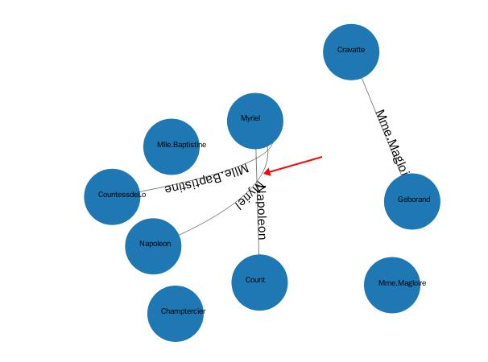

近期在项目中要实现关系图,需要在线条上绘制文字。要实现这个功能,我们需要在SVG中连接的线条从标签line修改为path,这样才可能实现类似如下的效果:

1个简单的例子如下所示:
<svg viewBox="0 0 1000 300"
xmlns="http://www.w3.org/2000/svg"
xmlns:xlink="http://www.w3.org/1999/xlink">
<path id="MyPath"
d="M 100 200
C 200 100 300 0 400 100
C 500 200 600 300 700 200
C 800 100 900 100 900 100" fill="none" stroke="red"/>
<text font-family="Verdana" font-size="42.5">
<textPath xlink:href="#MyPath">
We go up, then we go down, then up again
</textPath>
</text>
</svg>在这里我们需要实现1个path,然后设置其ID属性,之后我们创建textPath标签,并链接到上述的ID属性,这样就可以实现在路径上关联文字了。
而在D3中我们可以这样操作:
var link = svg.append("g").selectAll(".edgepath")
.data(graph.links)
.enter()
.append("path")
.style("stroke-width",0.5)
.style("fill","none")
.attr("marker-end",function(d){
return "url(#"+d.source+")";
})
.style("stroke","black")
.attr("id", function(d,i){
return "edgepath"+i;
});
var edges_text = svg.append("g").selectAll(".edgelabel")
.data(graph.nodes)
.enter()
.append("text")
.attr("class","edgelabel")
.attr("id", function(d,i){
return "edgepath"+i;
})
.attr("dx",80)
.attr("dy",0);
edges_text.append("textPath")
.attr("xlink:href", function(d,i){
return "#edgepath"+i;
}).text(function(d){
return d.id;
})实际上这段代码就是上述例子的实现,这样就可以避免编写繁琐的SVG代码了。
参考文章:
https://developer.mozilla.org/en-US/docs/Web/SVG/Element/textPath